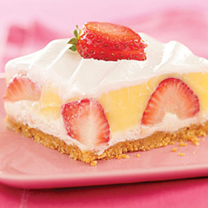

Berried Delight

Description
Berried Delight is a delicious desert
that doesn't take too long to prepare.
Enjoy strawberries embeded into Jello
on top of some graham crackers topped
with whipped cream.
Ingredients
- 1 1/2 cups HONEY MAID Graham Cracker Crumbs
- 1/4 cup sugar
- 6 tablespoons butter or margarine, melted
- 8 oz. Cream Cheese, softened
- 2 tablespoons cold milk
- 8 oz. Cool Whip whipped Topping, thawed, divided
- 4 cups strawberries, hulled, halved
- 3 1/2 cups cold milk
- 2 pkg. JELL-O Vanilla Flavor Instant Pudding